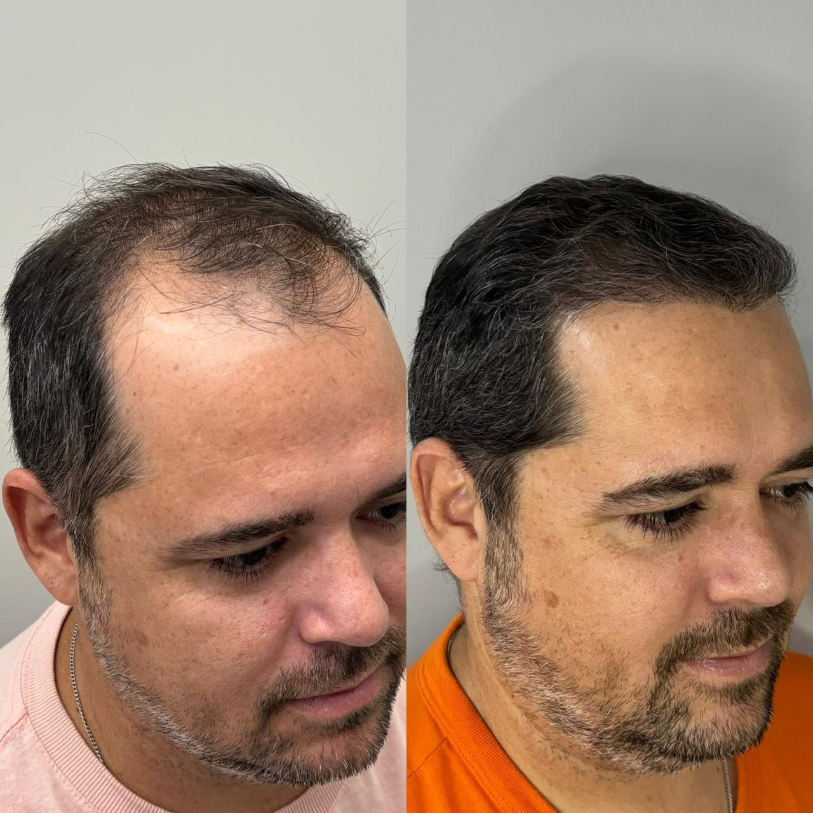

O transplante capilar é uma solução para quem deseja recuperar os fios em regiões afetadas pela calvície. Com técnicas modernas e planejamento individualizado, buscamos resultados naturais, respeitando as características de cada paciente.

Antes DepoisSem filtro, sem ângulo favorável, sem maquiagem de resultado. Mesma luz e mesma posição nas duas fotos: a primeira no dia da avaliação, a segunda no tempo indicado em cada caso.
Sobre os resultados: casos individuais, publicados com autorização dos pacientes. Resultados variam conforme grau de calvície, área doadora e adesão ao acompanhamento. Nenhuma imagem representa promessa de resultado. Só a avaliação presencial determina se você é candidato.
Se você já gastou com loção, xampu caro e fibra, sabe que nada disso traz fio onde não nasce mais. Esses produtos cuidam do cabelo que ainda existe. O transplante é diferente: pega folículos vivos da sua nuca e coloca um por um nas falhas.
A médica olha o grau da sua perda, a espessura dos seus fios e quanto a sua nuca tem para doar. Com isso ela desenha a nova linha no seu rosto, respeitando o formato dele e a direção em que o seu cabelo cresce. Você sai sabendo quantos folículos o seu caso pede, quanto custa e em quanto tempo fica pronto.
Anestesia local, sem corte e sem ponto. Você passa o dia acordado, conversando e mexendo no celular, e dorme na sua casa. Sem viagem, sem hotel, sem passagem: é aqui em Cascavel. Você sai com as orientações do pós escritas, e a equipe acompanha cada etapa da recuperação.
Entre o terceiro e o quarto mês você começa a ver os fios novos. Lá pelo sexto já dá para notar na foto. O resultado inteiro leva de 12 a 18 meses, e a clínica acompanha você nesse caminho todo.
Transplante malfeito você só descobre um ano depois, quando o fio não nasceu e a nuca já foi usada. E área doadora não volta: cada folículo tirado errado é um que você não tem mais. Por isso aqui quem examina e opera é médica, com registro, dedicada só a cabelo.
“Cada paciente tem uma história e expectativas próprias. Meu objetivo é um atendimento individualizado e baseado em ciência, buscando resultados naturais.”
Meia hora de conversa com a médica, sem custo. Você sai sabendo se pode fazer, quantos folículos precisa, quanto custa e em quanto tempo fica pronto. Decidir fica para depois.
Agendar avaliação